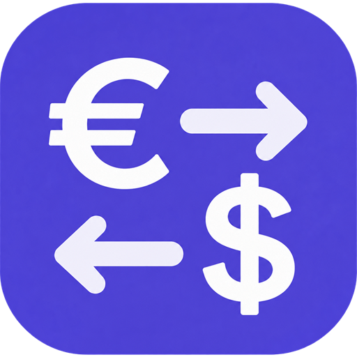

Conversor de monedas
Un conversor de divisas rápido y sencillo para el uso diario.

BALCO ConverterUn conversor de divisas rápido y sencillo para el uso diario.
BALCO Converter es un conversor de monedas y una calculadora de divisas para viajes, compras y comparación de precios. Convierte monedas fiduciarias con tasas de referencia actualizadas y continúa sin internet usando las últimas tasas guardadas correctamente.

Funciones
Conversor con costo real, tablero de viaje y tasas sin internet
Un conversor de divisas rápido y sencillo para el uso diario.
Toque la cámara en la pantalla principal, elija las divisas de origen y destino y coloque un precio impreso dentro del marco. Confirme el valor detectado para usarlo en el conversor.
Compara las condiciones de cambio con el tipo de referencia de la aplicación.
Toca una moneda para convertirla en la moneda base.
Sí, después de descargar correctamente los tipos al menos una vez. El conversor, el panel de viaje y el widget pueden usar los últimos tipos guardados en el dispositivo. Descubre cómo usar los tipos de cambio guardados sin conexión.
Abra «Criptomonedas» en el menú para convertir monedas compatibles y divisas fiduciarias. Los datos suelen proceder de CoinGecko, con Kraken como fuente secundaria para los pares compatibles.
Herramienta gratuita de divisas
Compara una oferta de cambio con la última tasa de referencia disponible y consulta la diferencia antes de cambiar moneda.
Ver la app
Un conversor de divisas rápido y sencillo para el uso diario.


BALCO Converter
BALCO Converter es un conversor de monedas y una calculadora de divisas para viajes, compras y comparación de precios. Convierte monedas fiduciarias con tasas de referencia actualizadas y continúa sin internet usando las últimas tasas guardadas correctamente.
Ingresa el monto en cualquiera de los campos y cambia la dirección al instante. La calculadora integrada permite sumar, restar, multiplicar, dividir y calcular porcentajes.
Ver la app
BALCO Converter — Google Play